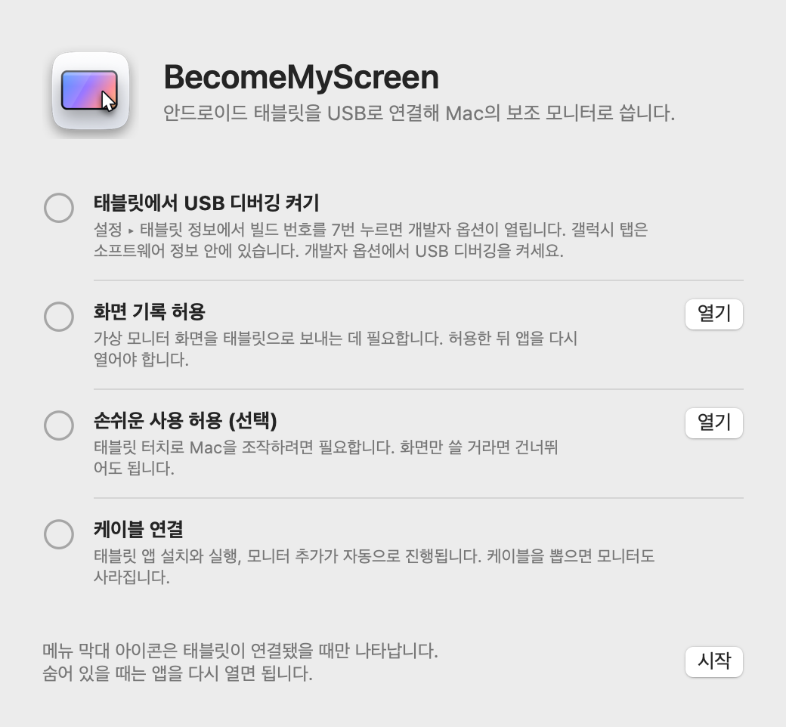
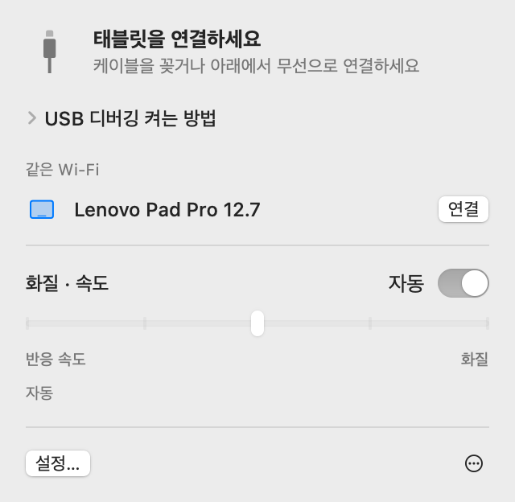
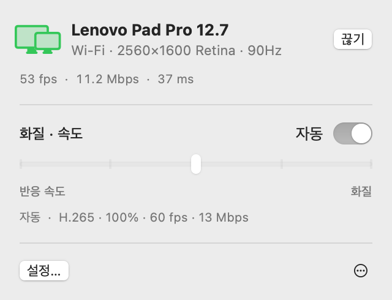
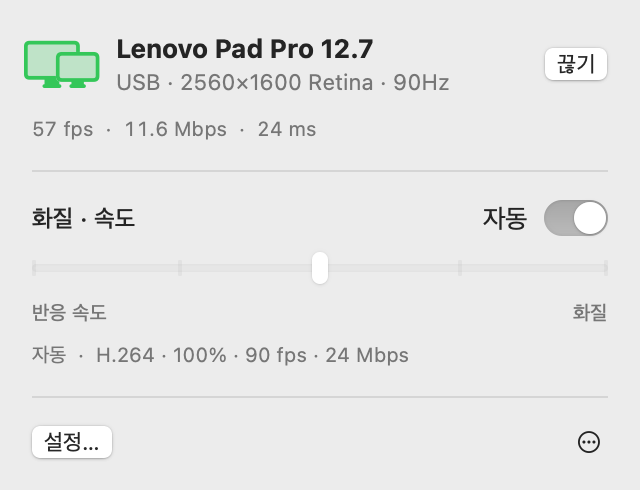
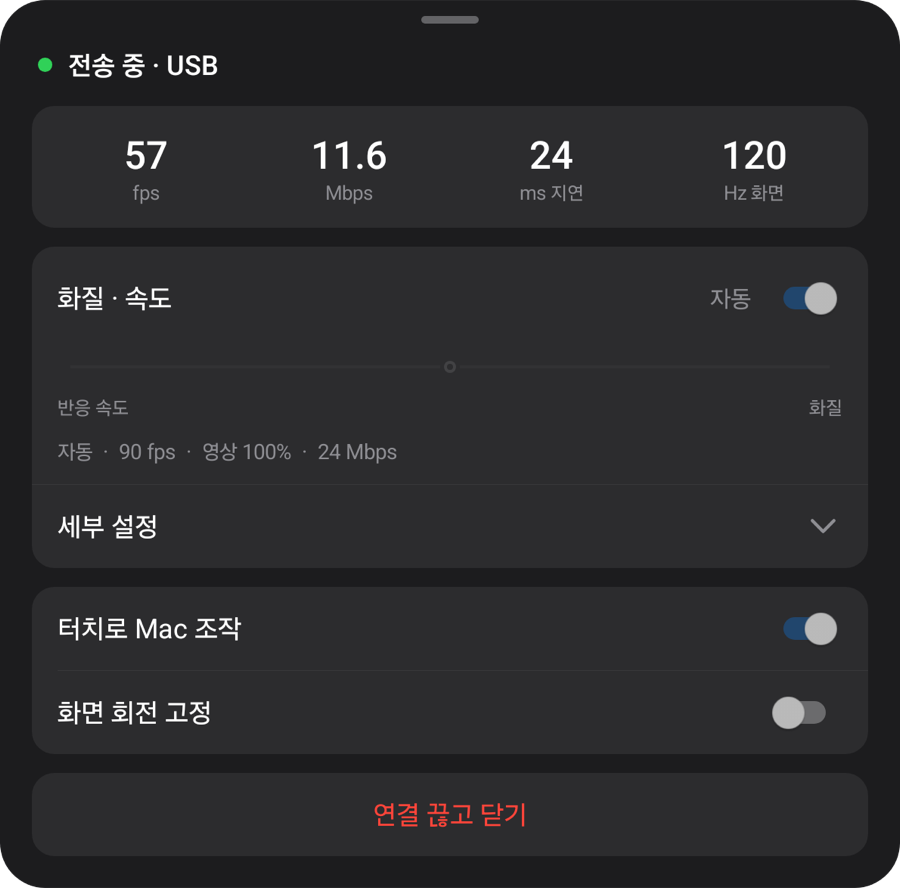
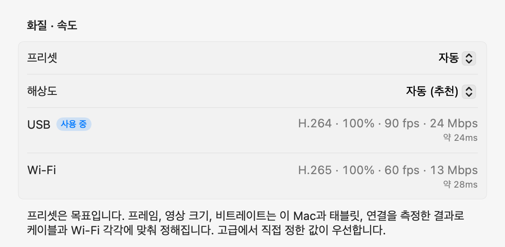

macOS + Windows 프리뷰
태블릿에 펼치는
내 컴퓨터 화면.
Mac에서는 보조 모니터로. Windows에서는 미러링 프리뷰로. 안드로이드 태블릿을 USB로 연결하면 컴퓨터가 태블릿 앱을 설치하고 실행합니다.
zip을 열어 응용 프로그램 폴더로 옮긴 뒤 실행합니다. 처음 연결하는 방법은 시작하기에 있습니다.
컴퓨터에서 이 페이지를 열어 Mac 또는 Windows 앱을 내려받으세요.


아래 설치 방법·기능·성능 측정은 Mac 버전 기준입니다. Windows는 위 프리뷰 안내를 확인해 주세요.
시작하기
처음 한 번만 준비하면 됩니다. 그다음부터는 케이블을 꽂으면 모니터가 생기고, 같은 Wi‑Fi에서는 케이블 없이도 연결됩니다.
-
Mac 앱 설치
내려받은 zip을 열어 BecomeMyScreen을 응용 프로그램 폴더로 옮기고 실행합니다. 화면 기록 권한을 허용한 뒤 앱을 한 번 다시 엽니다.
-
태블릿에서 USB 디버깅 켜기
설정 › 태블릿 정보에서 빌드 번호를 일곱 번 누르면 개발자 옵션이 열립니다. 갤럭시 탭은 소프트웨어 정보 안에 있습니다. 개발자 옵션에서 USB 디버깅을 켭니다.
-
케이블 연결
태블릿에 USB 디버깅 허용 창이 뜨면 ‘이 컴퓨터에서 항상 허용’에 체크하고 허용을 누릅니다. Mac이 태블릿 앱을 설치하고 실행한 뒤 모니터를 추가합니다. 태블릿 앱을 따로 내려받을 필요는 없습니다.

속도
Mac이 화면을 캡처한 순간부터 태블릿에 그려지기까지 걸린 시간입니다. Lenovo Pad Pro 12.7과 M4 Pro Mac에서 쟀습니다.
| 영상 크기 | 60 fps | 120 fps |
|---|---|---|
| 100%2560×1600 | 20 ms | 24 ms |
| 75%1920×1200 | 14 ms | 19 ms |
| 50%1280×800 | 11 ms | 16 ms |
화면은 Apple Silicon의 하드웨어 인코더가 H.264로 압축해 USB로 보내고, 태블릿의 하드웨어 디코더가 받아서 바로 그립니다. 자동 모드는 처음 연결할 때 디코더가 감당하는 양을 재고, 밀리지 않는 범위에서 프레임을 고릅니다. 이 태블릿에서는 90fps를 골랐습니다.
측정 방법: 두 기기의 시계 차이를 보정한 뒤, Mac이 프레임을 캡처한 시각과 태블릿이 그 프레임을 그린 시각의 차이를 쟀습니다.
무선
USB로 한 번 연결한 태블릿은 같은 Wi‑Fi에서 무선으로도 씁니다. 화면을 쓰다가 케이블을 뽑으면 Wi‑Fi로 그대로 이어집니다.
- 연결
- 태블릿에서 앱을 열면 Mac 메뉴 막대의 ‘같은 Wi‑Fi’ 목록에 나타납니다. 연결을 누르면 화면이 뜹니다.
- 케이블을 뽑으면
- 1초 안에 Wi‑Fi로 넘어갑니다. 가상 모니터와 창 배치는 그대로이고, 다시 꽂으면 USB로 돌아옵니다.
- 보안
- 무선 연결에 쓰는 키는 USB 케이블로만 주고받습니다. 키를 확인한 뒤에만 연결되고, 화면과 입력은 모두 AES-256-GCM으로 암호화됩니다.
- 자동 조절
- 태블릿이 받은 프레임을 하나하나 알려 주고, Mac은 밀린 만큼 프레임을 건너뛰며 비트레이트를 맞춥니다. 무선이 잠깐 느려져도 지연이 쌓이지 않습니다.


| 연결 | 지연 | 비고 |
|---|---|---|
| USB | 약 20–25ms | 태블릿 최대 프레임 |
| Wi‑Fi 5 GHz | 40~55ms | 60fps, 비트레이트는 화질 설정까지 자동으로 올라감 |
| Wi‑Fi 2.4 GHz | 40~65ms | 지연이 가끔 100ms 넘게 튀어 끊겨 보일 수 있음 |
Lenovo Pad Pro 12.7, 2560×1600, 화면이 계속 바뀌는 상태에서 쟀습니다. 태블릿이 2.4GHz Wi‑Fi에 연결되어 있으면 5GHz로 바꾸라고 알려 줍니다.
화질과 반응 속도
다섯 단계 중에서 고르거나 자동에 맡깁니다. Mac 메뉴 막대에서 바꿔도, 태블릿 메뉴에서 바꿔도 양쪽이 같이 바뀝니다.
| 프리셋 | 프레임 | 영상 크기 | 비트레이트 |
|---|---|---|---|
| 자동 | 90 fps | 100% | 24 Mbps |
| 1반응 속도 최우선 | 120 fps | 50% | 8 Mbps |
| 2반응 속도 우선 | 120 fps | 75% | 14 Mbps |
| 3균형 | 90 fps | 100% | 24 Mbps |
| 4화질 우선 | 90 fps | 100% | 33 Mbps |
| 5화질 최우선 | 60 fps | 100% | 39 Mbps |
Lenovo Pad Pro 12.7(2560×1600, 120Hz)을 M4 Pro Mac에 USB로 연결해 측정한 값입니다. 프리셋은 목표라서, 다른 Mac이나 태블릿, Wi‑Fi에서는 측정한 결과에 맞춰 값을 스스로 정합니다. 자동은 균형과 같습니다.
영상 크기는 Mac에 보이는 해상도와 따로 정해집니다. 영상 크기를 줄여도 태블릿은 화면을 꽉 채워서 보여 주고, 줄인 만큼 디코더 부담과 지연이 줄어듭니다.
처음 연결할 때 약 10초 동안 케이블, 이 Mac의 비디오 인코더, 태블릿 디코더의 모드별 성능을 잽니다. Wi‑Fi는 처음 무선으로 연결할 때 네트워크를 잽니다. 모든 프리셋은 이 수치를 바탕으로 케이블과 Wi‑Fi에 따로 맞춰지며, 고급 설정에서는 연결마다 원하는 값을 고정할 수 있습니다. 케이블이 느리면 바꾸라는 알림이 뜹니다.



터치
태블릿을 만지면 Mac이 마우스 입력으로 받습니다. Mac에서 손쉬운 사용 권한을 허용하면 켜집니다.
| 태블릿에서 | Mac에서 |
|---|---|
| 탭 | 클릭 |
| 끌기 | 드래그 |
| 두 손가락으로 끌기 | 스크롤 |
| 두 손가락으로 탭 | 오른쪽 클릭 |
| 세 손가락으로 탭 | 태블릿 메뉴 열기 |
| 펜으로 그리기 | 필압과 기울기까지 Mac의 그림 태블릿 입력으로 전달 |
| 펜이나 마우스를 화면 위에 띄우기 | 커서 이동. 펜 버튼을 누른 채 터치하면 오른쪽 클릭 |
터치하기 전 자리로 돌아가는 커서
태블릿을 누르면 Mac의 커서가 그 자리로 옮겨 갑니다. 그다음 마우스를 조금 움직이면 커서는 누르기 전에 있던 자리로 돌아갑니다. 메인 모니터에서 하던 작업으로 마우스를 끌고 올 필요가 없습니다. 설정에서 끌 수 있습니다.
세부 동작
- 메뉴 막대 아이콘
-
태블릿이 연결돼 있을 때만 보입니다. 숨어 있을 때 앱을 다시 열면 잠깐 나타나 패널을 엽니다.
- 대기
- 준비 중
- 사용 중
- 확인 필요
- 태블릿 앱 실행
- 케이블을 꽂았을 때 태블릿 앱이 꺼져 있으면 Mac이 실행하고, 화면이 꺼져 있으면 깨웁니다. 잠금 화면은 우회하지 않습니다.
- 업데이트
- Mac 앱이 새 버전을 확인하고, 원할 때 스스로 업데이트합니다. 더 새로운 태블릿 앱이 들어 있으면 화면을 띄우기 전에 케이블로 태블릿 앱부터 업데이트합니다.
- 세로 방향
- 태블릿을 세로로 돌리면 가상 모니터도 세로로 다시 만듭니다.
- 주사율과 화면 꺼짐
- 보내는 동안 태블릿의 주사율이 60Hz로 내려가지 않게 고정하고, 화면이 꺼지지 않게 합니다.
- 케이블 점검
- USB가 480Mbps보다 느린 속도로 잡히거나, 전송 속도가 8MB/s에 못 미치거나, 3분 안에 세 번 끊기면 케이블이나 포트를 바꿔 보라고 알립니다.
- 연결이 끊겼을 때
- 케이블이 빠지면 Wi‑Fi로 이어 갑니다. 무선으로 이어 갈 수 없으면 가상 모니터를 잠시 유지하고, 그 안에 다시 연결되면 창 배치가 그대로 이어집니다.
- 끊기와 다시 연결
- 메뉴 막대에서 끊기를 누르면 케이블이 꽂혀 있어도 태블릿 화면만 내려놓고 기다립니다. 다시 연결을 누르면 이어집니다.
- 태블릿 앱 자동 종료
- 태블릿에 충전기를 포함해 아무것도 연결되지 않은 상태가 10초 이어지면 태블릿 앱이 스스로 닫힙니다. 무선 연결을 기다릴 수 있으면 2분 동안 기다립니다.
요구 사항
- Mac
- Apple Silicon Mac, macOS 14 이상
- Windows
- Windows 11 · Intel / AMD x64 · ARM64 · Windows 프리뷰
- 태블릿
- Android 8.0 이상, USB 디버깅을 켤 수 있는 기기
- 케이블
- 데이터 전송을 지원하는 USB 케이블. 충전 전용 케이블로는 연결되지 않습니다. 허브보다 Mac 본체 포트가 안정적입니다.
- 무선
- Mac과 태블릿이 같은 Wi‑Fi에 있어야 합니다. 5GHz를 권합니다. 처음 한 번은 USB로 연결해야 합니다.
- Mac 권한
- 화면 기록. 터치로 Mac을 조작하려면 손쉬운 사용, 무선으로 쓰려면 로컬 네트워크도 필요합니다.
자주 묻는 질문
Windows 프리뷰
이번 프리뷰는 기존 화면을 복제합니다. ARM64 Windows 검증 환경에서 드라이버 설치가 차단되어 해당 PC에서는 ZIP을 사용해야 합니다. x64 실제 PC의 확장 화면 동작도 아직 검증하지 못했습니다. 릴리즈 안내와 알려진 제한
태블릿에 앱을 따로 설치해야 하나요?
아니요. 태블릿 앱은 Mac 앱 안에 들어 있어서, 케이블을 꽂으면 Mac이 설치하고 실행합니다. Mac 앱을 업데이트하면 다음 연결 때 태블릿 앱도 함께 업데이트됩니다.
Wi‑Fi로도 쓸 수 있나요?
네. 처음 한 번 USB로 연결하면 그다음부터는 같은 Wi‑Fi에서 무선으로 연결됩니다. 태블릿에서 앱을 열고 Mac 메뉴 막대에서 연결을 누르거나, 쓰는 중에 케이블을 뽑으면 됩니다. 지연은 USB보다 조금 길고(5GHz에서 40~55ms), 2.4GHz Wi‑Fi에서는 가끔 끊겨 보일 수 있어 5GHz를 권합니다.
처음 한 번은 왜 USB로 연결해야 하나요?
무선 연결에 쓰는 키를 케이블로만 주고받기 때문입니다. 그래서 같은 Wi‑Fi에 있는 다른 기기가 태블릿인 척 Mac에 붙을 수 없습니다. 태블릿 앱도 이때 설치됩니다.
펜 필압이 되나요?
네. 펜의 필압과 기울기가 macOS의 그림 태블릿 입력(필압 · 기울기 · 근접)으로 전달됩니다. Android의 표준 펜 입력을 쓰기 때문에 S Pen이나 Lenovo 펜에 따로 SDK나 드라이버가 필요 없습니다. Lenovo Pad Pro 12.7의 펜으로 확인했습니다.
어떤 태블릿에서 되나요?
Android 8.0 이상이고 USB 디버깅을 켤 수 있으면 됩니다. 개발과 측정은 Lenovo Pad Pro 12.7(2944×1840, 120Hz)에서 했고, 다른 기기는 아직 직접 확인하지 못했습니다. 가상 모니터의 해상도와 방향은 연결할 때 태블릿 화면에 맞춰 정해집니다.
왜 App Store에 없나요?
가상 디스플레이를 만들 때 macOS의 비공개 기능을 쓰기 때문에 App Store에는 올릴 수 없습니다. 대신 Apple 개발자 인증서로 서명하고 Apple 공증을 받아, 내려받은 뒤 바로 열 수 있습니다.
화면 기록과 손쉬운 사용 권한은 왜 필요한가요?
화면 기록은 태블릿으로 보낼 가상 모니터 화면을 캡처하는 데, 손쉬운 사용은 태블릿 터치와 펜을 Mac의 입력으로 바꾸는 데, 로컬 네트워크는 같은 Wi‑Fi의 태블릿을 찾는 데 씁니다. 화면은 USB 케이블이나 같은 Wi‑Fi 안에서만 오가고(무선은 암호화), 인터넷으로 나가지 않습니다.
연결이 자꾸 끊깁니다.
데이터 전송을 지원하는 다른 케이블로 바꾸거나, 허브 대신 Mac 본체 포트에 바로 꽂아 보세요. USB가 느리게 잡히거나 자주 끊기면 앱이 먼저 알려 줍니다. 잠깐 끊긴 경우에는 가상 모니터를 15초 동안 유지했다가 그대로 이어 붙입니다.
태블릿이 잠겨 있으면요?
Mac이 화면을 깨우고 앱을 열지만 잠금은 우회하지 않습니다. PIN이나 패턴으로 잠금을 풀면 바로 연결됩니다.
Intel Mac에서도 되나요?
지금 배포하는 버전은 Apple Silicon Mac 전용입니다.